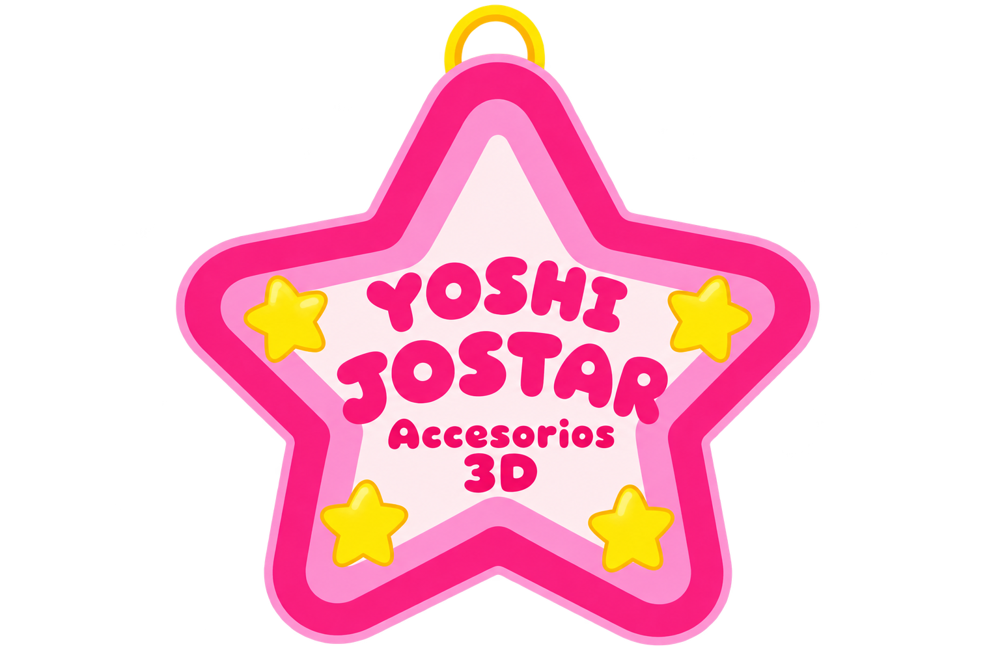

Forma de pago 💗
Yoshi Jostar Accesorios 3D
💳 Datos de pago
NOMBRE DEL TITULAR
Joselin Reta
NÚMERO DE CUENTA
722969010833612537
Verifica los datos antes de realizar tu pago. 💗
Gracias por apoyar nuestro pequeño negocio.

Yoshi Jostar Accesorios 3D
Verifica los datos antes de realizar tu pago. 💗
Gracias por apoyar nuestro pequeño negocio.